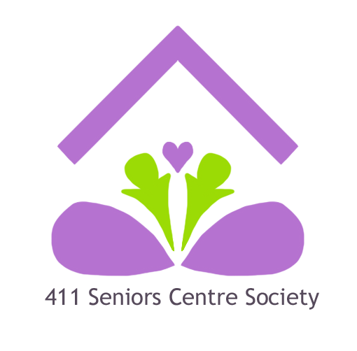

Results
After analyzing the data, it was clear that members wished for a logo that was colorful, warm, welcoming, and embodied human connections.
With these points in mind, I sketched some logos.
‍

I decided to go with the one on the left, and changed the colors to brighter shades. This is what resulted:

As for the website, I sketched the following Low-fi wireframes. (Could probably work on my penmanship..)
And proceeded to transfer my thought process over to figma, creating digital wireframes.
The final next step, was where I could start to bring my design to life, and to create some prototypes!
While mindful of the intended audience (the older folks!), as well as the survey responses, I aimed to create a simple, clean layout.
Key points include less intimidating photos (previously of extremely close up face shots), no extremely light fonts, etc.
I also changed the “Join us!” page in the navigation, to “Membership” as per one users’ request. And on the actual membership page,
I resized and organized the boxes for the sign-up form to make better use of white space. Furthermore, under the “What services are you interested in”, I directly listed examples of offered services (such as yoga classes, information and referral services, etc.), allowing potential members to select as many boxes as they’d like. Listing all the services offered could also pull further interest and introduce potential members to programs that they may not have previously been aware of.
Compiling all my user-research and results into a powerpoint presentation, I pitched my findings and suggestions to the Executive Director. I was met with extremely positive feedback, and the executive director kept my data on hand so that they could utilize it in the near future.
Limitations that I encountered were that although the centre supposedly has 432 members, only 42 surveys were collected. In-person interviews (3) were limited, and could have been influenced by interviewer bias. There was also the possibility that members perceived, “Okay” as interchangeable with “Good” when rating the website. In-person participants had the ability to ask for further clarification whereas those who did the online survey did not. If I did this project again, I would have created more specific options for the survey.
‍
|


{kind=link}
{kind=link}